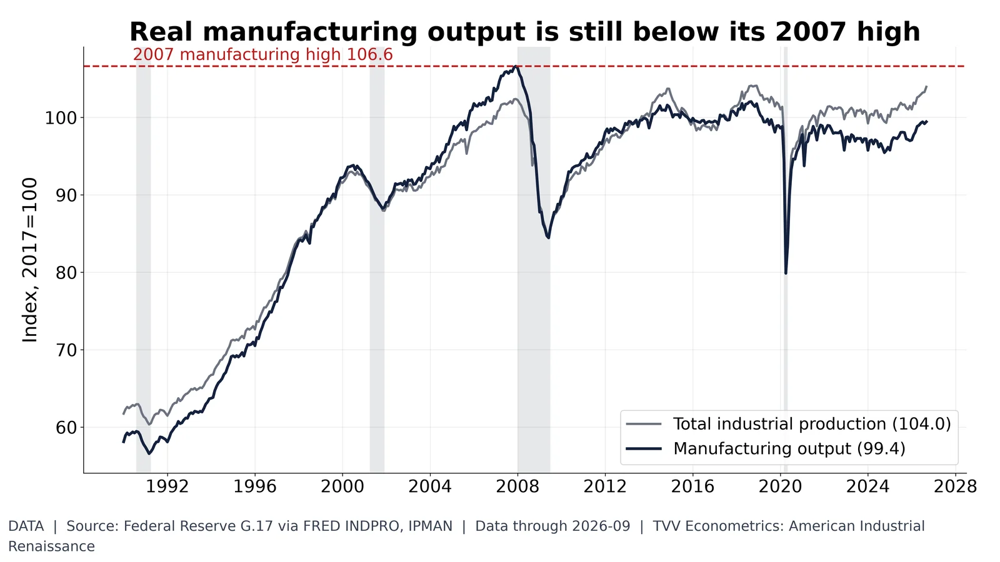
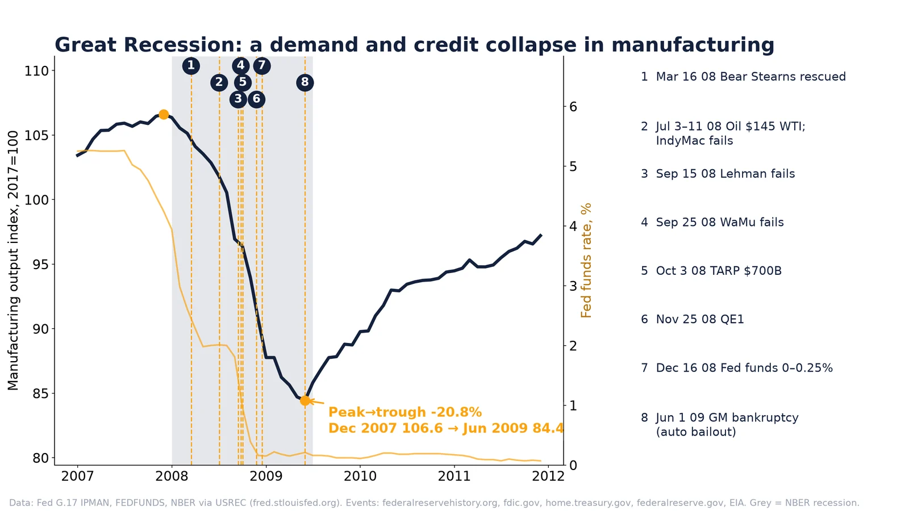
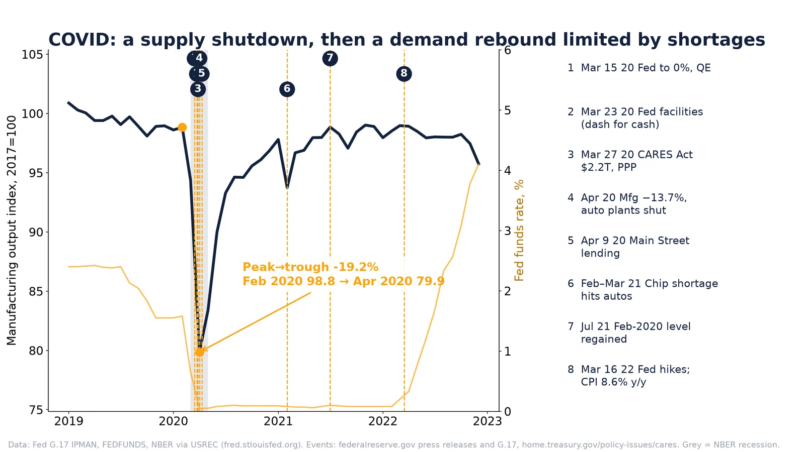
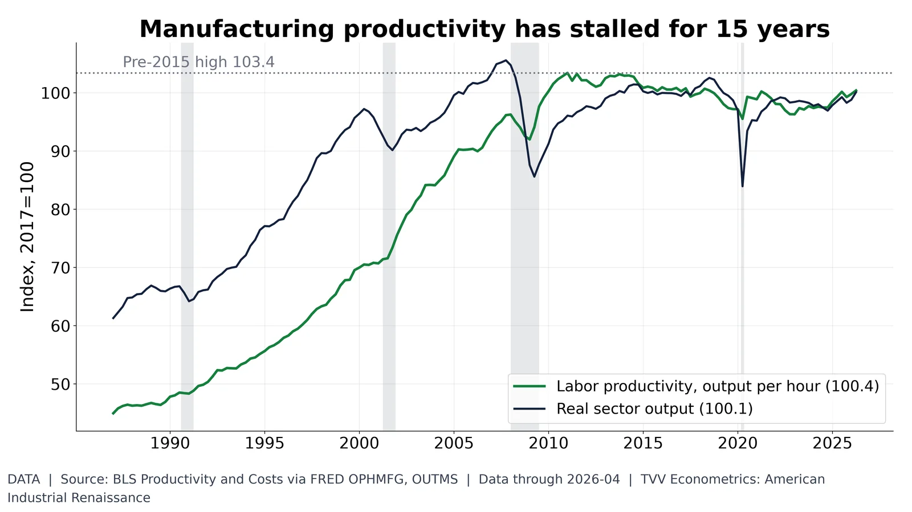

4. Manufacturing Output and Recessions

Manufacturing output index 99.4 (Sep 2026), below the 2007 high 106.6. Federal Reserve G.17.
Data | Data date: 2026-09
- Dec 2007: manufacturing output high 106.6 (Data) https://fred.stlouisfed.org/series/IPMAN
- Apr 2020: COVID low 79.9 (Data) https://fred.stlouisfed.org/series/IPMAN
- Sep 2026: 99.4, still below the 2007 high (Data) https://fred.stlouisfed.org/series/IPMAN
Sources: https://fred.stlouisfed.org/series/IPMAN https://fred.stlouisfed.org/series/INDPRO

Great Recession: demand and credit collapse; output −20.8% Dec 2007–Jun 2009, never fully regained. Fed G.17.
- Verdict: demand-driven credit and banking collapse; oil spike was a brief cost squeeze (Interpretation).
- Output −20.8%: Dec 2007 106.6 → Jun 2009 84.4 (18 months); old peak never regained, latest 99.4 Sep 2026 (Data) https://fred.stlouisfed.org/series/IPMAN
- Mar 16, 2008: Bear Stearns rescued https://www.federalreservehistory.org/essays/bear-stearns-collapse
- Jul 2008: WTI ~$145 (Jul 3 close); IndyMac fails Jul 11 https://fred.stlouisfed.org/series/DCOILWTICO https://www.fdic.gov/resources/resolutions/bank-failures/in-brief/2008
- Sep 2008: Lehman (Sep 15) and WaMu (Sep 25) fail https://www.federalreservehistory.org/essays/great-recession-of-200709 https://www.fdic.gov/resources/resolutions/bank-failures/failed-bank-list/wamu-settlement.html
- Oct 3, 2008: TARP $700B https://home.treasury.gov/data/troubled-assets-relief-program
- Nov 25, 2008: QE1 https://www.federalreserve.gov/newsevents/pressreleases/monetary20081125b.htm
- Dec 2008: Fed funds to 0–0.25% (Dec 16); GM/Chrysler loans (Dec 19) https://www.federalreserve.gov/newsevents/pressreleases/monetary20081216b.htm https://home.treasury.gov/data/troubled-assets-relief-program/automotive-programs
- Rates/inflation: fed funds 5.26% (Jul 2007) → 0.16% (Dec 2008); CPI 5.5% (Jul 2008) → −1.2% (Jun 2009) (Data) https://fred.stlouisfed.org/series/FEDFUNDS https://fred.stlouisfed.org/series/CPIAUCSL

COVID: supply shutdown; output −19.2% Feb–Apr 2020, Feb-2020 level regained Jul 2021. Fed G.17.
- Verdict: supply shock first (plant shutdowns), then a stimulus-led demand rebound held back by 2021 chip shortages (Interpretation).
- Output −19.2% in 2 months: Feb 2020 98.8 → Apr 2020 79.9; Feb level regained Jul 2021 (Data) https://fred.stlouisfed.org/series/IPMAN
- Mar 2020: Fed to zero plus QE (Mar 15); Fed facilities amid dash for cash (Mar 23) https://www.federalreserve.gov/newsevents/pressreleases/monetary20200315a.htm https://www.federalreserve.gov/newsevents/pressreleases/monetary20200323b.htm
- Mar 27, 2020: CARES Act $2.2T with PPP https://home.treasury.gov/policy-issues/cares
- Apr 9, 2020: Main Street lending https://www.federalreserve.gov/newsevents/pressreleases/monetary20200409a.htm
- Apr 2020: manufacturing −13.7%, autos down more than 70% https://www.federalreserve.gov/releases/g17/20200515/
- 2021: semiconductor shortages hold down vehicle output https://www.federalreserve.gov/releases/g17/20210415/
- Rates/inflation: fed funds 1.55% (Dec 2019) → 0.05% (Apr 2020); hikes from Mar 2022; CPI 9.0% Jun 2022 (Data) https://fred.stlouisfed.org/series/FEDFUNDS https://fred.stlouisfed.org/series/CPIAUCSL

Manufacturing output per hour 100.4 (Q2 2026, 2017=100), below its 103.4 pre-2015 high. BLS via FRED.
Data | Data date: 2026-04
- Pre-2015 high: output per hour 103.4 (Data) https://fred.stlouisfed.org/series/OPHMFG
- Q2 2026: 100.4, 2017=100 (Data) https://fred.stlouisfed.org/series/OPHMFG
- Output itself still below 2007 high (Data) https://fred.stlouisfed.org/series/OUTMS
Sources: https://fred.stlouisfed.org/series/OPHMFG https://fred.stlouisfed.org/series/OUTMS